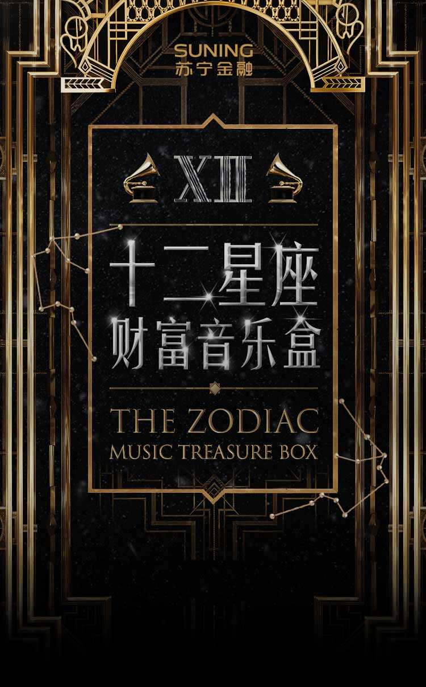

<!DOCTYPE html>
<html>
<head lang="en">
    <meta charset="UTF-8">
    <meta name="apple-mobile-web-app-capable" content="yes">
    <meta content="telephone=no" name="format-detection">
    <meta name="apple-touch-fullscreen" content="no"/>
    <meta name="viewport" content="width=750">
    <meta name="apple-mobile-web-app-status-bar-style" content="black-translucent"/>
    <title>HTML5 项目</title>
    <script src="https://cdn.staticfile.org/jquery/2.1.0/jquery.min.js" charset="utf-8"></script>
    <script type="text/javascript" src="http://res.wx.qq.com/open/js/jweixin-1.0.0.js"></script>
    <script>
        $.ajax({
        	url: 'http://mercurymage.com:18080/wechat_sdk/getsignature' // 此处url请求地址需要替换成你自己实际项目中服务器数字签名服务地址
        	,
        	type: 'post',
        	data: {
        		url: location.href.split('#')[0] // 将当前URL地址上传至服务器用于产生数字签名
        	}
        }).done(function(r) {
        	// 返回了数字签名对象
        	// console.log(r);
        	// console.log(r.appid);
        	// console.log(r.timestamp);
        	// console.log(r.nonceStr);
        	// console.log(r.signature);
        	// 开始配置微信JS-SDK
        	wx.config({
        		debug: false,
        		appId: r.appId,
        		timestamp: r.timestamp,
        		nonceStr: r.nonceStr,
        		signature: r.signature,
        		jsApiList: [
        			'checkJsApi',
        			'onMenuShareTimeline',
        			'onMenuShareAppMessage',
        			'onMenuShareQQ',
        			'onMenuShareWeibo',
        			'hideMenuItems',
        			'chooseImage'
        		]
        	});

        	wx.ready(function() {

        	});
        });
    </script>
</head>
<body>
  <!-- the class "content" is used for flexible plugin -->
  <div class="container">
	  
	  <!-- <section class="home">
  	  	
		
  	  </section> -->

	  <setion class="scene page1">
	  	<div class="content">
	  		<ul>
	  			<li></li>
	  			<li></li>
	  			<li></li>
	  			<li></li>
	  			<li></li>
	  			<li></li>
	  			<li></li>
	  			<li></li>
	  			<li></li>
	  			<li></li>
	  			<li></li>
	  			<li></li>
	  		</ul>
	  	</div>
	  </setion>

      <!-- <div class="luoPanel">
  		<p class="one touch_block" date-type='top'>1</p>
  		<p class="two touch_block" date-type='left'>2</p>
  		<p class="three touch_block" date-type='bottom'>3</p>
  		<p class="four touch_block" date-type='right'>4</p>
  		
      </div> -->
  </div>
</body>
</html>
